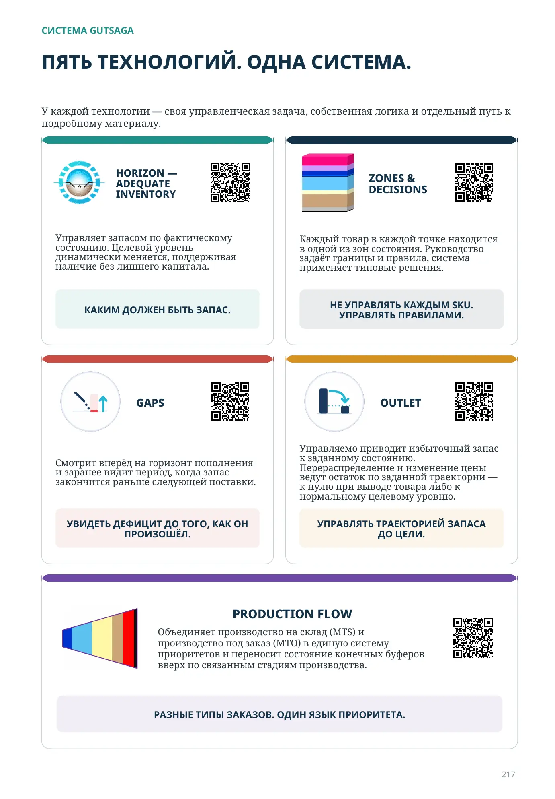

Управляет запасом по фактическому состоянию. Целевой уровень динамически меняется, поддерживая наличие без лишнего капитала.
КАКИМ ДОЛЖЕН БЫТЬ ЗАПАС.

СИСТЕМА GUTSAGA
У каждой технологии — своя управленческая задача, собственная логика и отдельный путь к подробному материалу.
Управляет запасом по фактическому состоянию. Целевой уровень динамически меняется, поддерживая наличие без лишнего капитала.
КАКИМ ДОЛЖЕН БЫТЬ ЗАПАС.
Каждый товар в каждой точке находится в одной из зон состояния. Руководство задаёт границы и правила, система применяет типовые решения.
НЕ УПРАВЛЯТЬ КАЖДЫМ SKU. УПРАВЛЯТЬ ПРАВИЛАМИ.
Смотрит вперёд на горизонт пополнения и заранее видит период, когда запас закончится раньше следующей поставки.
УВИДЕТЬ ДЕФИЦИТ ДО ТОГО, КАК ОН ПРОИЗОШЁЛ.
Управляемо приводит избыточный запас к заданному состоянию. Перераспределение и изменение цены ведут остаток по заданной траектории — к нулю при выводе товара либо к нормальному целевому уровню.
УПРАВЛЯТЬ ТРАЕКТОРИЕЙ ЗАПАСА ДО ЦЕЛИ.
Объединяет производство на склад (MTS) и производство под заказ (MTO) в единую систему приоритетов и переносит состояние конечных буферов вверх по связанным стадиям производства.
РАЗНЫЕ ТИПЫ ЗАКАЗОВ. ОДИН ЯЗЫК ПРИОРИТЕТА.